Calypso ouvre une agence à Lille. On l'a reliée au siège avec un VPN (un tunnel chiffré), on a adapté le pare-feu, et on supervise tout avec Netdata.
Depuis le PC : ssh gw, ssh srv, ssh web, ssh cli, ssh agence, ssh nomade (utilisateur nael, avec la clé SSH, sans mot de passe).
| Réseau | Rôle | Passerelle | Plage DHCP | Adresses fixes |
|---|---|---|---|---|
| 192.168.125.0/24 (NAT VMware) | WAN, « Internet » du lab | 192.168.125.2 | DHCP de VMware : .128 à .254 | PC hôte .1 ; gw, agence et nomade prennent une adresse dans la plage DHCP |
| 10.10.10.0/24 (segment « lan ») | LAN du siège | 10.10.10.254 (gw) | Kea : .100 à .199 (réservation .50 pour l'imprimante) | gw .254 ; srv .10 |
| 10.10.20.0/24 (segment « DMZ ») | DMZ (serveur web) | 10.10.20.254 (gw) | aucune | gw .254 ; web .10 |
| 10.10.99.0/24 (virtuel) | Tunnels WireGuard | aucune | aucune | gw .1 ; nomade .2 ; agence .10 |
| 10.10.30.0/24 (segment « agence ») | LAN de l'agence | 10.10.30.1 (agence) | aucune | agence .1 (aucun poste dans le lab) |
| Machine | Carte | Réseau | Adresse | Type |
|---|---|---|---|---|
| gw | ens33 | WAN (NAT) | 192.168.125.130/24 | DHCP de VMware |
| gw | ens37 | LAN | 10.10.10.254/24 | fixe |
| gw | ens38 | DMZ | 10.10.20.254/24 | fixe |
| gw | wg0 | VPN | 10.10.99.1/24 | fixe (carte virtuelle WireGuard) |
| gw | ens39 | segment « agence » | aucune | non utilisée (éteinte) |
| srv | ens33 | LAN | 10.10.10.10/24 | fixe (passerelle 10.10.10.254) |
| cli | ens33 | LAN | 10.10.10.100/24 | DHCP de Kea |
| web | ens33 | DMZ | 10.10.20.10/24 | fixe (passerelle 10.10.20.254) |
| agence | ens37 | WAN (NAT) | 192.168.125.137/24 | DHCP de VMware |
| agence | ens38 | LAN agence | 10.10.30.1/24 | fixe |
| agence | wg0 | VPN | 10.10.99.10/24 | fixe (carte virtuelle WireGuard) |
| nomade | ens33 | WAN (NAT) | 192.168.125.135/24 | DHCP de VMware |
| nomade | wg0 | VPN | 10.10.99.2/24 | fixe (carte virtuelle WireGuard) |
gw interdit tout ce qui n'est pas écrit dans ce tableau, et note les refus dans le journal (gw-input-drop et gw-forward-drop). F1 à F10 viennent du TP 2, F11 à F14 du TP 3 (VPN de nomade), F15 à F19 du projet (agence). Les lignes F15 à F19 ont été écrites avant les règles.
| N° | Source → destination | Service | Décision, justification |
|---|---|---|---|
| F1 | LAN → gw | TCP 22 | Autorisé : administration |
| F2 | PC hôte (WAN) → gw | TCP 22 | Autorisé : administration du lab |
| F3 | LAN → Internet | tous (NAT) | Autorisé : accès des postes |
| F4 | LAN → DMZ | TCP 22, 80, 443 ; ping | Autorisé : administrer et consulter web |
| F5 | Internet → web | TCP 80, 443 (DNAT) | Autorisé : publier l'intranet |
| F6 | DMZ → srv | DNS 53 TCP/UDP | Autorisé : résolution de noms de web |
| F7 | DMZ → Internet | TCP 80, 443 | Autorisé : mises à jour de web |
| F8 | DMZ → LAN (sauf F6) | tous | Interdit, journalisé : un web piraté ne doit pas atteindre le LAN |
| F9 | Internet → LAN | tous | Interdit, journalisé : le LAN n'est pas exposé |
| F10 | tout le reste | tous | Interdit, journalisé (politique drop) |
| F11 | WAN → gw | UDP 51820 | Autorisé : WireGuard (sans lui, pas de handshake) |
| F12 | nomade → gw | TCP 22 | Autorisé : administration par le VPN |
| F13 | nomade → srv | DNS 53 ; TCP 3128 | Autorisé : DNS interne et proxy |
| F14 | nomade → web ; → partout | TCP 22, 80, 443 ; ping | Autorisé : intranet, test de connectivité |
| F15 | LAN → agence (wg0) | TCP 22 ; ping | Autorisé : administrer et superviser l'agence |
| F16 | agence (10.10.30.0/24 et tunnel 10.10.99.10) → srv | DNS 53 TCP/UDP | Autorisé : DNS interne |
| F17 | agence → srv | TCP 3128 | Autorisé : proxy Squid |
| F18 | agence → web | TCP 80, 443 | Autorisé : intranet |
| F19 | agence → srv | ping | Autorisé : test du tunnel |
Ce sont les fichiers modifiés ou créés. Aucune clé privée n'est écrite ici : elles sont remplacées par <clé privée de ...>.
/etc/wireguard/wg0.conf : l'agence a deux réseaux (son adresse de tunnel et son LAN) car c'est un routeur ; nomade n'a qu'une adresse car c'est un poste seul.
# /etc/wireguard/wg0.conf de gw : VPN WireGuard (TP 3 + projet de synthese) [Interface] Address = 10.10.99.1/24 ListenPort = 51820 PrivateKey = <clé privée de gw> # Pair : agence (site a site). Cote gw : son adresse de tunnel + tout son reseau local. [Peer] PublicKey = 5FGkbixUkHih7ncuFq/6PhnykaR1JZIklm7M3H/CeEc= AllowedIPs = 10.10.99.10/32, 10.10.30.0/24 # Pair : nomade (TP 3), poste distant : une seule adresse de tunnel [Peer] PublicKey = LMbYZk3EXJ/v5rn2zR6e6su1nw/7fbBBi98v25OnA0g= AllowedIPs = 10.10.99.2/32
/etc/nftables.conf (fichier complet) : les règles F11 à F19 sont ajoutées avant la ligne log de leur chaîne, sinon elles ne serviraient à rien. Pour ne pas se couper l'accès, chaque rechargement était précédé d'un retour arrière programmé (systemd-run --on-active=...), annulé après les tests.
#!/usr/sbin/nft -f
# /etc/nftables.conf de gw : pare-feu de Calypso (TP 2 ; F11 à F14 : TP 3 ; F15 à F19 : projet de synthèse)
# Chaque règle applique une ligne de la matrice (numéro entre crochets).
# Vérifier : sudo nft -c -f /etc/nftables.conf Charger : sudo systemctl reload nftables
flush ruleset
# --- cartes réseau et adresses (adapter les noms : ip -br link) ---------------
define WAN = "ens33"
define LAN = "ens37"
define DMZ = "ens38"
define SRV = 10.10.10.10
define WEB = 10.10.20.10
define VPN = "wg0"
define AGENCE = 10.10.30.0/24
define NOMADE = 10.10.99.2
# --- filtrage (IPv4 et IPv6) ------------------------------------------------
table inet filtre {
# paquets destinés à gw lui-même
chain input {
type filter hook input priority filter; policy drop; # politique : tout est interdit sauf liste blanche
ct state established,related accept # autorise les réponses aux connexions déjà acceptées
ct state invalid drop
iif "lo" accept
meta l4proto ipv6-icmp accept # IPv6 : découverte des voisins
icmp type echo-request limit rate 5/second accept # ping de gw, limité
iifname $LAN tcp dport 22 accept # [F1] administration de gw depuis le LAN
iifname $WAN tcp dport 22 accept # [F2] administration depuis le PC hôte (lab)
iifname $WAN udp dport 51820 accept # [F11] WireGuard : UDP 51820 depuis le WAN (tunnel de l'agence)
iifname $VPN ip saddr $NOMADE tcp dport 22 accept # [F12] administration de gw par le VPN (limitee a nomade)
log prefix "gw-input-drop: " level info
}
# paquets qui traversent gw (entre LAN, DMZ et Internet)
chain forward {
type filter hook forward priority filter; policy drop;
ct state established,related accept
ct state invalid drop
iifname $LAN oifname $WAN accept # [F3] LAN → Internet
iifname $LAN oifname $DMZ tcp dport { 22, 80, 443 } accept # [F4] LAN → DMZ
iifname $LAN oifname $DMZ icmp type echo-request accept # [F4] ping LAN → DMZ
iifname $WAN oifname $DMZ ip daddr $WEB tcp dport { 80, 443 } ct status dnat accept # [F5]
iifname $DMZ oifname $LAN ip daddr $SRV meta l4proto { tcp, udp } th dport 53 accept # [F6] DMZ → DNS de srv
iifname $DMZ oifname $WAN tcp dport { 80, 443 } accept # [F7] mises à jour de web
# --- nomade (TP 3) : F13 et F14, limites a l'adresse de nomade ------------
iifname $VPN oifname $LAN ip saddr $NOMADE ip daddr $SRV meta l4proto { tcp, udp } th dport 53 accept # [F13] DNS
iifname $VPN oifname $LAN ip saddr $NOMADE ip daddr $SRV tcp dport 3128 accept # [F13] proxy Squid
iifname $VPN oifname $DMZ ip saddr $NOMADE ip daddr $WEB tcp dport { 22, 80, 443 } accept # [F14] web : 22, 80, 443
iifname $VPN ip saddr $NOMADE icmp type echo-request accept # [F14] ping
# --- agence (projet de synthese) : F15 et suivantes ---------------------
iifname $LAN oifname $VPN ip daddr $AGENCE tcp dport 22 accept # [F15] LAN -> agence : SSH
iifname $LAN oifname $VPN ip daddr $AGENCE icmp type echo-request accept # [F15] LAN -> agence : ping
iifname $VPN ip saddr { 10.10.30.0/24, 10.10.99.10 } ip daddr $SRV meta l4proto { tcp, udp } th dport 53 accept # [F16] agence -> DNS de srv
iifname $VPN ip saddr $AGENCE ip daddr $SRV tcp dport 3128 accept # [F17] agence -> proxy Squid de srv
iifname $VPN ip saddr $AGENCE ip daddr $WEB tcp dport { 80, 443 } accept # [F18] agence -> intranet (web)
iifname $VPN ip saddr $AGENCE ip daddr $SRV icmp type echo-request accept # [F19] agence -> srv : ping
log prefix "gw-forward-drop: " level info
}
# paquets émis par gw : on lui fait confiance
chain output {
type filter hook output priority filter; policy accept;
}
}
# --- traduction d'adresses (IPv4) -------------------------------------------
table ip nat {
# NAT destination : publier web sur l'adresse WAN de gw [F5]
chain prerouting {
type nat hook prerouting priority dstnat; policy accept;
iifname $WAN tcp dport { 80, 443 } dnat to $WEB # [F5] redirige 80 et 443 vers web
}
# NAT source : le LAN et la DMZ sortent avec l'adresse WAN de gw
chain postrouting {
type nat hook postrouting priority srcnat; policy accept;
oifname $WAN masquerade # NAT : la sortie vers Internet prend l'adresse WAN de gw
}
}
/etc/network/interfaces : ens37 reçoit son adresse en DHCP (WAN), ens38 a une adresse fixe (LAN de l'agence).
source /etc/network/interfaces.d/* auto lo iface lo inet loopback auto ens37 allow-hotplug ens37 iface ens37 inet dhcp auto ens38 allow-hotplug ens38 iface ens38 inet static address 10.10.30.1/24
/etc/ssh/sshd_config.d/10-calypso.conf : connexion par clé seulement, jamais en root (exigence E1).
# Lab Calypso : connexion par clé uniquement, jamais en root PasswordAuthentication no KbdInteractiveAuthentication no PermitRootLogin no
/etc/wireguard/wg0.conf : le pair gw donne accès au tunnel, au LAN et à la DMZ du siège. PersistentKeepalive garde le tunnel ouvert derrière le NAT. Le service wg-quick@wg0 est activé au démarrage.
# /etc/wireguard/wg0.conf de agence : VPN WireGuard site a site vers gw [Interface] Address = 10.10.99.10/24 ListenPort = 51820 PrivateKey = <clé privée de agence> # Pair : gw (siege). Cote agence : le tunnel, le LAN et la DMZ du siege. [Peer] PublicKey = qX3S79x/ju9vBlw+HjE9y2+HA9/azIvrQdvJL7eoaVY= Endpoint = 192.168.125.130:51820 AllowedIPs = 10.10.99.0/24, 10.10.10.0/24, 10.10.20.0/24 PersistentKeepalive = 25
/etc/hosts : le nom de la machine.
127.0.0.1 localhost 127.0.1.1 agence.calypso.internal agence
/etc/bind/named.conf.options (extrait) : sans la dernière ligne, le DNS répond REFUSED à l'agence.
acl "calypso" {
127.0.0.1; // srv lui-même
10.10.10.0/24; // LAN
10.10.20.0/24; // DMZ (TP 2)
10.10.99.0/24; // tunnel WireGuard (TP 3)
10.10.30.0/24; // agence (projet de synthese)
};
/etc/squid/conf.d/calypso.conf : sans le réseau de l'agence, le proxy répond 403. Squid était arrêté : il est maintenant activé au démarrage.
# ===== /etc/squid/conf.d/calypso.conf # Lu par squid.conf avant sa dernière règle « http_access deny all ». # qui a le droit d'utiliser le proxy : le LAN et les télétravailleurs (VPN) acl calypso src 10.10.10.0/24 10.10.20.0/24 10.10.99.0/24 10.10.30.0/24 # réseaux autorisés : LAN, DMZ, VPN (nomade, agence) # sites interdits par la charte informatique (un domaine par ligne) acl sites_bloques dstdomain "/etc/squid/sites-bloques.txt" http_access deny calypso sites_bloques http_access allow calypso # ===== /etc/squid/sites-bloques.txt .mega.nz .wetransfer.com
/etc/kea/kea-dhcp4.conf (extrait) : l'option DNS donnait par erreur l'adresse de cli ; elle est corrigée avec l'adresse de srv.
"interfaces-config": {
"interfaces": [ "ens33" ]
{ "name": "domain-name-servers", "data": "10.10.10.10" },
"subnet4": [
"subnet": "10.10.10.0/24",
"pools": [ { "pool": "10.10.10.100 - 10.10.10.199" } ],
{ "name": "routers", "data": "10.10.10.254" }
"reservations": [
"hw-address": "52:54:00:aa:bb:01",
"ip-address": "10.10.10.50",
"hostname": "imp-rdc"
Netdata : installé depuis le dépôt officiel. Le tableau de bord est limité à 127.0.0.1, et il y a un fichier par collecteur.
# ===== /etc/netdata/netdata.conf
# /etc/netdata/netdata.conf de srv : tableau de bord limite a la boucle locale (E6).
# Acces depuis le PC : ssh -L 19999:127.0.0.1:19999 srv puis http://127.0.0.1:19999
[web]
bind to = 127.0.0.1
# ===== /etc/netdata/go.d/ping.conf
# Presence des machines (ICMP) : gw, srv, web, agence (agence est joint par le tunnel WireGuard)
jobs:
- name: calypso
hosts:
- 10.10.10.254 # gw
- 10.10.10.10 # srv
- 10.10.20.10 # web
- 10.10.30.1 # agence (via wg0)
packets: 3
interval: 5
# ===== /etc/netdata/go.d/portcheck.conf
# Ports des services : SSH, 80, 443, 3128
jobs:
- name: gw
host: 10.10.10.254
ports: [22]
- name: srv
host: 10.10.10.10
ports: [22, 3128]
- name: web
host: 10.10.20.10
ports: [22, 80, 443]
- name: agence
host: 10.10.30.1
ports: [22]
# ===== /etc/netdata/go.d/httpcheck.conf
# Contenu de l'intranet : code HTTP et texte attendu dans la page
jobs:
- name: intranet_http
url: http://10.10.20.10/
status_accepted: [200, 301]
- name: intranet_https
url: https://intranet.calypso.internal/
status_accepted: [200]
response_match: 'Intranet de Calypso'
# ===== /etc/netdata/go.d/dns_query.conf
# Resolution DNS aupres du serveur interne (srv)
jobs:
- name: srv_dns
domains:
- intranet.calypso.internal
- web.calypso.internal
servers:
- 10.10.10.10
record_types: [A]
# ===== /etc/netdata/go.d/x509check.conf
# Expiration du certificat de l'intranet (alerte a 14 j, critique a 7 j)
jobs:
- name: intranet
source: https://intranet.calypso.internal:443
days_until_expiration_warning: 14
days_until_expiration_critical: 7
# ===== /etc/apt/sources.list.d/netdata.list
deb [signed-by=/usr/share/keyrings/netdata-archive-keyring.asc] https://repository.netdata.cloud/repos/stable/debian/ trixie/
/etc/nginx/sites-available/intranet : HTTPS avec un certificat signé par la CA de Calypso, valable pour trois noms. La clé privée a été créée sur web et n'en sort jamais.
# /etc/nginx/sites-available/intranet : intranet de Calypso en HTTPS
server {
listen 443 ssl; # port HTTPS
listen [::]:443 ssl;
http2 on;
server_name intranet.calypso.internal www.calypso.internal web.calypso.internal;
ssl_certificate /etc/ssl/certs/intranet.crt; # certificat signé par la CA de Calypso
ssl_certificate_key /etc/ssl/private/intranet.key; # clé privée, créée sur web (ne quitte jamais web)
ssl_protocols TLSv1.2 TLSv1.3;
root /var/www/html;
index index.html;
}
/etc/ssh/sshd_config.d/20-sftp.conf : le compte echange ne peut faire que du SFTP, enfermé dans /srv/sftp/echange.
# Lab Calypso : comptes d'echange de fichiers, enfermes dans /srv/sftp/<compte>
Match Group sftp-calypso
ChrootDirectory /srv/sftp/%u
ForceCommand internal-sftp
AllowTcpForwarding no
X11Forwarding no
Réseau de web : adresse fixe dans la DMZ, et srv comme serveur DNS.
# ===== /etc/network/interfaces (web)
auto ens33
iface ens33 inet static
address 10.10.20.10/24
gateway 10.10.20.254
# ===== /etc/resolv.conf (web)
search calypso.internal
nameserver 10.10.10.10
# ===== /etc/hosts (web)
127.0.1.1 web.calypso.internal web
/etc/wireguard/wg0.conf : pas de ligne DNS = (elle ferait échouer le tunnel, car resolvconf n'est pas installé). Le service est activé au démarrage.
[Interface] Address = 10.10.99.2/24 PrivateKey = <clé privée de nomade> [Peer] PublicKey = qX3S79x/ju9vBlw+HjE9y2+HA9/azIvrQdvJL7eoaVY= Endpoint = 192.168.125.130:51820 AllowedIPs = 10.10.99.0/24, 10.10.10.0/24, 10.10.20.0/24 PersistentKeepalive = 25
Relevés du 14/11/2026, après un redémarrage complet du lab, sauf indication. Depuis l'agence, les tests utilisent l'adresse source 10.10.30.1 car il n'y a pas de poste dans l'agence.
| Test | Attendu | Obtenu | Conforme |
|---|---|---|---|
E1 : ip -br addr sur agence | une adresse WAN et 10.10.30.1/24 | ens37 192.168.125.137/24 ; ens38 10.10.30.1/24 | oui |
E1 : sshd -T sur agence | root interdit, clé seulement | permitrootlogin no ; passwordauthentication no | oui |
| E1 : connexion SSH avec mot de passe forcé | refusée | Permission denied (publickey) | oui |
| E1 : machine-id et clés SSH des 6 machines | tous différents | 6 machine-id et 6 clés différents | oui |
E2 : sudo wg show sur gw et agence | handshake récent | handshakes de 18 à 37 secondes (capture 1 et 2) | oui |
E2 : systemctl is-enabled wg-quick@wg0 | enabled | enabled sur gw, agence et nomade | oui |
| E2 : arrêt puis redémarrage des 6 machines | tunnels remontés seuls | les 2 tunnels étaient montés sans intervention (handshakes de 55 et 62 secondes) | oui |
| E2 : redémarrage de agence puis de gw (10/11) | tunnel remonté seul | agence et gw revenues en 35 s ; handshake en moins d'une minute | oui |
E3 : ping -I 10.10.30.1 -c1 10.10.10.10 | 1 received | 1 received | oui |
E3 : dig +short -b 10.10.30.1 @10.10.10.10 intranet.calypso.internal | web.calypso.internal. puis 10.10.20.10 | web.calypso.internal. 10.10.20.10 | oui |
E3 : curl --interface 10.10.30.1 vers http://10.10.20.10 | 200 | 200 (et 200 en HTTPS) | oui |
| E3 : proxy sur srv, port 3128 | joignable | succeeded | oui |
E3 : nc -zv -w3 -s 10.10.30.1 10.10.10.10 22 | refusé (timed out) | timed out ; ligne dans le journal de gw (capture 3 et 4) | oui |
E4 : depuis srv, ping puis ssh nael@10.10.30.1 hostname | réponse, connexion par clé | 1 received ; « agence » | oui |
| E4 : ports TCP de gw côté WAN (scan depuis agence) | aucun nouveau port | ouverts : 22 (F2), 80 et 443 (F5) ; fermés : 53, 3128, 19999 | oui |
E5 : nft -c -f /etc/nftables.conf | fichier valide, règles numérotées | valide ; F1 à F7 et F11 à F19 présentes | oui |
| E6 : écoute du tableau de bord Netdata | pas exposé sur le réseau | 127.0.0.1:19999 seulement (capture 5) | oui |
| E6 : les 5 collecteurs | des graphiques pour chacun | ping 20, portcheck 42, httpcheck 20, dns_query 3, x509check 2 | oui |
| E7 : panne provoquée (15/11, voir partie 7) | alerte CRITICAL puis retour à la normale | CRITICAL à 11:48:13, CLEAR à 11:49:23 (capture 6 et annexe A6 à A10) | oui |
| N° | Test | Attendu | Obtenu | Conforme |
|---|---|---|---|---|
| F1 | cli → gw, port 22 | passe | succeeded | oui |
| F2 | PC → gw, port 22 | passe | ouvert | oui |
| F3 | cli → https://deb.debian.org ; ping 9.9.9.9 | passe | HTTP/2 200 ; 1 reçu | oui |
| F4 | cli → web, ports 22, 80, 443 et ping ; port 25 | passe ; port 25 refusé | succeeded ×3, 1 reçu ; timed out | oui |
| F5 | PC → WAN de gw, en http et https | page de l'intranet | titre « Intranet de Calypso Ingénierie » (http et https) | oui |
| F6 | web → srv, port 53 en TCP et en UDP ; nom srv.calypso.internal | passe | succeeded ×2 ; 10.10.10.10 | oui |
| F7 | web → Internet en http et https ; ping 9.9.9.9 | passe ; ping refusé | 200 ×2 ; 0 reçu | oui |
| F8 | web → srv:22, cli:22, cli:80 | refusé | timed out ×3 | oui |
| F9 | depuis le WAN vers 10.10.10.10:22 (route temporaire depuis agence, retirée ensuite) | refusé | timed out ; journal « IN=ens33 OUT=ens37 » | oui |
| F10 | nmap de cli sur gw (ports 53, 80) ; PC → gw (ports 53, 3128, 19999) | refusé | filtered ×2 ; fermés ×3 | oui |
| F11 | handshakes de agence et de nomade | récents | 2 handshakes récents | oui |
| F12 | nomade → gw (10.10.99.1), port 22 | passe | succeeded | oui |
| F13 | nomade → srv : dig ; port 3128 | passe | 10.10.20.10 ; succeeded | oui |
| F14 | nomade → web:80 (page), web:22, ping srv ; srv:22 | passe ; srv:22 refusé | page ; succeeded ; 1 reçu ; timed out | oui |
| F15 | srv → agence : ping et ssh ; cli → agence:22 | passe | 1 reçu ; « agence » ; succeeded | oui |
| F16 | agence → srv : dig | passe | 10.10.20.10 | oui |
| F17 | agence → srv, port 3128 | passe | succeeded | oui |
| F18 | agence → web, ports 80 et 443 ; port 22 | passe ; port 22 refusé | 200 et 200 ; timed out | oui |
| F19 | agence → srv : ping ; srv:22 et gw:22 | ping passe ; ports refusés | 1 reçu ; timed out ×2 | oui |
Capture 1 : le tunnel vu depuis gw
$ ssh gw "sudo wg show" interface: wg0 public key: qX3S79x/ju9vBlw+HjE9y2+HA9/azIvrQdvJL7eoaVY= private key: (hidden) listening port: 51820 peer: LMbYZk3EXJ/v5rn2zR6e6su1nw/7fbBBi98v25OnA0g= endpoint: 192.168.125.135:58454 allowed ips: 10.10.99.2/32 latest handshake: 18 seconds ago transfer: 744 B received, 584 B sent peer: 5FGkbixUkHih7ncuFq/6PhnykaR1JZIklm7M3H/CeEc= endpoint: 192.168.125.137:51820 allowed ips: 10.10.99.10/32, 10.10.30.0/24 latest handshake: 36 seconds ago transfer: 21.91 KiB received, 16.35 KiB sent
Capture 2 : le tunnel vu depuis agence
$ ssh agence "sudo wg show" interface: wg0 public key: 5FGkbixUkHih7ncuFq/6PhnykaR1JZIklm7M3H/CeEc= private key: (hidden) listening port: 51820 peer: qX3S79x/ju9vBlw+HjE9y2+HA9/azIvrQdvJL7eoaVY= endpoint: 192.168.125.130:51820 allowed ips: 10.10.99.0/24, 10.10.10.0/24, 10.10.20.0/24 latest handshake: 37 seconds ago transfer: 16.80 KiB received, 22.32 KiB sent persistent keepalive: every 25 seconds
Capture 3 : tests des flux depuis l'agence (3 autorisés, 1 refusé)
$ ssh agence
agence:~$ ping -I 10.10.30.1 -c1 10.10.10.10
64 bytes from 10.10.10.10: icmp_seq=1 ttl=63 time=4.09 ms
1 packets transmitted, 1 received, 0% packet loss, time 0ms
agence:~$ dig +short -b 10.10.30.1 @10.10.10.10 intranet.calypso.internal
web.calypso.internal.
10.10.20.10
agence:~$ curl -s -o /dev/null -w '%{http_code}' --interface 10.10.30.1 http://10.10.20.10
200
agence:~$ nc -zv -w3 -s 10.10.30.1 10.10.10.10 22
nc: connect to 10.10.10.10 port 22 (tcp) timed out: Operation now in progress
Capture 4 : la ligne du journal de gw pour le flux refusé (IN=wg0 : il arrive par le tunnel ; DPT=22 : il visait le SSH)
$ ssh gw gw:~$ sudo journalctl -k --since "-2min" | grep gw-forward-drop | tail -1 nov. 14 15:24:54 gw kernel: gw-forward-drop: IN=wg0 OUT=ens37 SRC=10.10.30.1 DST=10.10.10.10 PROTO=TCP SPT=44291 DPT=22 SYN
Capture 5 : Netdata n'écoute que sur 127.0.0.1
$ ssh srv "ss -tlnp | grep 19999"
LISTEN 0 4096 127.0.0.1:19999 0.0.0.0:* users:(("netdata",pid=1168,fd=6))
| Quoi | Collecteur Netdata | Cibles |
|---|---|---|
| Machines en ligne | ping | gw 10.10.10.254, srv 10.10.10.10, web 10.10.20.10, agence 10.10.30.1 |
| Ports des services | portcheck | gw : 22 ; srv : 22 et 3128 ; web : 22, 80, 443 ; agence : 22 |
| Contenu de l'intranet | httpcheck | http://10.10.20.10/ (200 ou 301) ; https://intranet.calypso.internal/ (200 et le texte « Intranet de Calypso ») |
| Résolution DNS | dns_query | intranet.calypso.internal et web.calypso.internal, demandés à 10.10.10.10 |
| Date d'expiration du certificat | x509check | https://intranet.calypso.internal:443 (alerte à 14 jours, critique à 7 jours) |
Le VPN est surveillé « par ricochet » : si le tunnel tombe, le ping et le port 22 de l'agence ne répondent plus, et Netdata alerte. Preuves : annexe A, captures A1 à A5.
Le tableau de bord n'écoute que sur 127.0.0.1 de srv : on ne peut pas l'ouvrir directement depuis le réseau. On passe par un tunnel SSH :
ssh -L 19999:127.0.0.1:19999 srvhttp://127.0.0.1:19999On a arrêté le tunnel sur agence (sudo systemctl stop wg-quick@wg0), regardé Netdata, puis rétabli le tunnel (sudo systemctl start wg-quick@wg0). Les heures viennent des commandes (date) et du journal d'alertes de Netdata.
| Heure (15/11/2026) | Événement |
|---|---|
| 11:47:37 | Arrêt du tunnel sur agence |
| 11:48:13 | Netdata déclenche 3 alertes, 36 secondes après l'arrêt : ping_host_reachable (10.10.30.1) en CRITICAL ; ping_packet_loss et portcheck_connection_timeouts (port 22 de l'agence) en WARNING |
| 11:48:43 | ping_packet_loss passe en CRITICAL (10 % de perte) |
| 11:49:07 | Rétablissement du tunnel |
| 11:49:23 | ping_host_reachable : retour à la normale (CLEAR), 16 secondes après le rétablissement |
| 11:53:43 | portcheck_connection_timeouts : retour à la normale |
| 11:58:53 | ping_packet_loss : retour à la normale |
| 11:59:15 | Onglet Alerts : « This room has no active alerts » |
Les alertes de perte de paquets et de ports calculent une moyenne sur plusieurs minutes : elles reviennent donc plus tard (environ 10 minutes) que l'alerte principale. Un premier essai, le 10/11/2026, avait donné le même résultat (CRITICAL à 10:59:15, CLEAR à 10:59:45). Première commande en cas de panne du VPN : sudo wg show des deux côtés.
Capture 6 : Netdata, onglet Events : tout l'historique de la panne (15/11/2026)
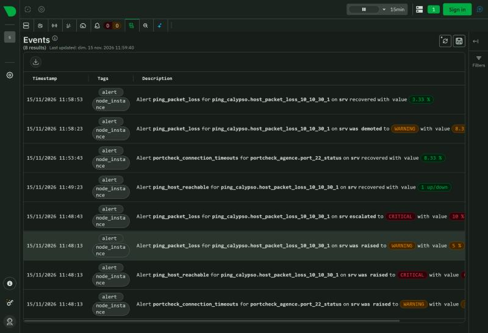
Preuves de fonctionnement de Netdata et autres captures de la panne : annexe A (captures A1 à A10).
| Symptôme | Diagnostic | Solution |
|---|---|---|
| Pas de « latest handshake » : le tunnel ne monte pas | sudo wg show des deux côtés ; journalctl -k | grep 51820 sur gw | Si le port UDP 51820 est jeté : ajouter ou remonter la règle F11. Sinon : corriger la clé publique du pair ou l'Endpoint. |
| Handshake correct, mais rien ne passe | ip route | grep wg0 ; ping -I 10.10.30.1 ... | Compléter AllowedIPs : 10.10.30.0/24 côté gw ; 10.10.10.0/24 et 10.10.20.0/24 côté agence. |
| DNS en REFUSED ou proxy en 403 depuis l'agence | dig @10.10.10.10 ... : status REFUSED | Ajouter 10.10.30.0/24 aux ACL de bind9 et de Squid, vérifier (named-checkconf, squid -k parse), recharger. |
| srv ne peut pas joindre l'agence (ping, SSH) | journalctl -k | grep gw-forward-drop (OUT=wg0) | La règle F15 manque ou est placée après la ligne log : la placer avant. |
| Le tunnel ne remonte pas après un redémarrage | systemctl is-enabled wg-quick@wg0 | sudo systemctl enable --now wg-quick@wg0 |
| Netdata : l'alerte HTTPS reste en CRITICAL | curl -sS https://intranet.calypso.internal depuis srv | srv ne connaît pas la CA de Calypso : copier ca.crt dans /usr/local/share/ca-certificates/ puis sudo update-ca-certificates. |
| Le tableau de bord Netdata ne s'ouvre pas | sudo ss -tlnp | grep 19999 sur srv ; le tunnel SSH est-il ouvert ? | Relancer ssh -L 19999:127.0.0.1:19999 srv ; sinon sudo systemctl restart netdata. |
| Plus d'accès SSH à gw après un rechargement du pare-feu | Console VMware de gw | Règle F2 ou ct state established manquant : sudo nft flush ruleset, corriger, recharger. On l'évite avec un retour arrière programmé. |
Tableau de bord ouvert par le tunnel SSH (http://127.0.0.1:19999), le 15/11/2026. L'heure est en bas de chaque capture ou dans la page.
Capture A1 : Ping - gw, srv, web et agence répondent, 0 % de perte
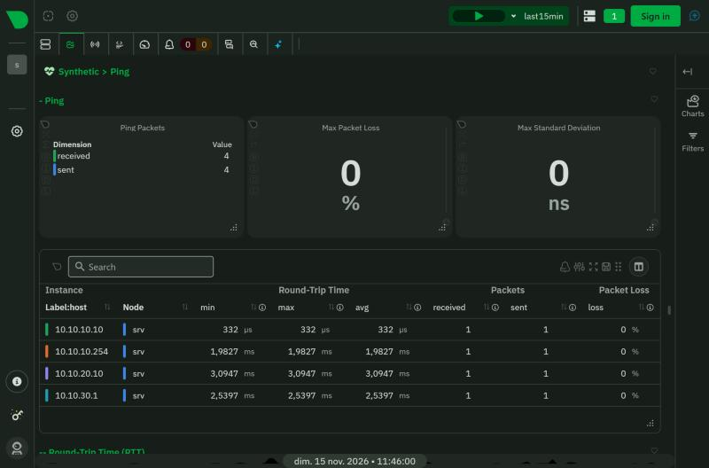
Capture A2 : HTTP - l'intranet répond en http et en https
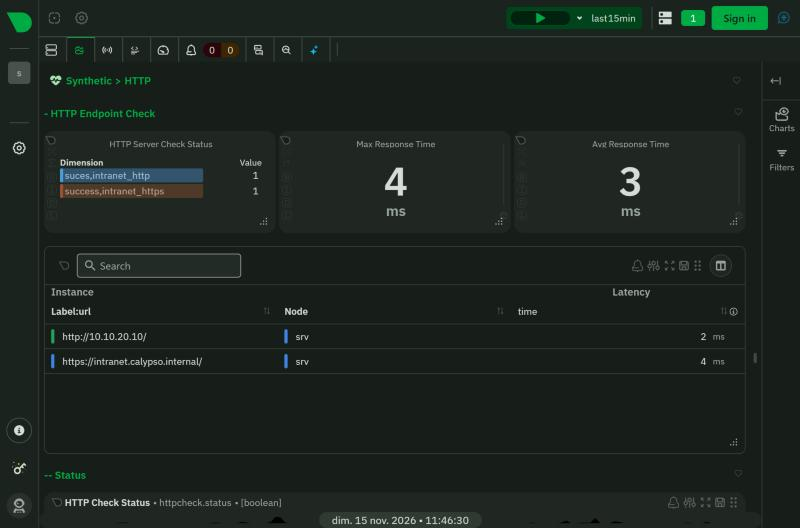
Capture A3 : Ports - 7 vérifications réussies, 0 échec (SSH, 80, 443, 3128)
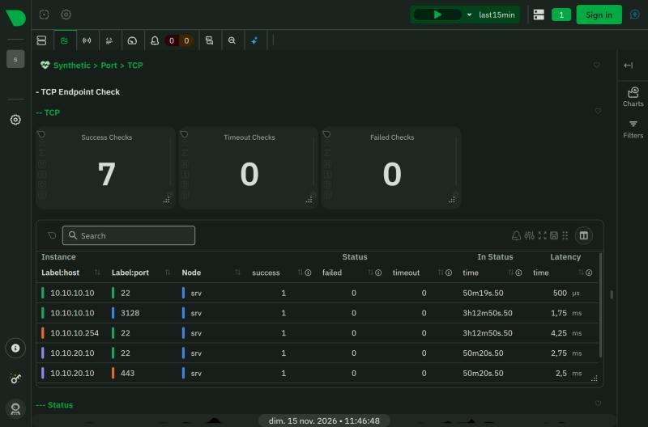
Capture A4 : DNS - srv (10.10.10.10) répond
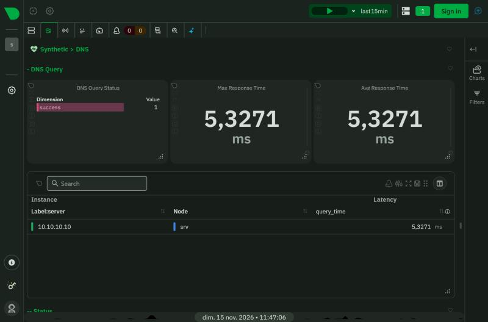
Capture A5 : Certificat de l'intranet - date d'expiration surveillée
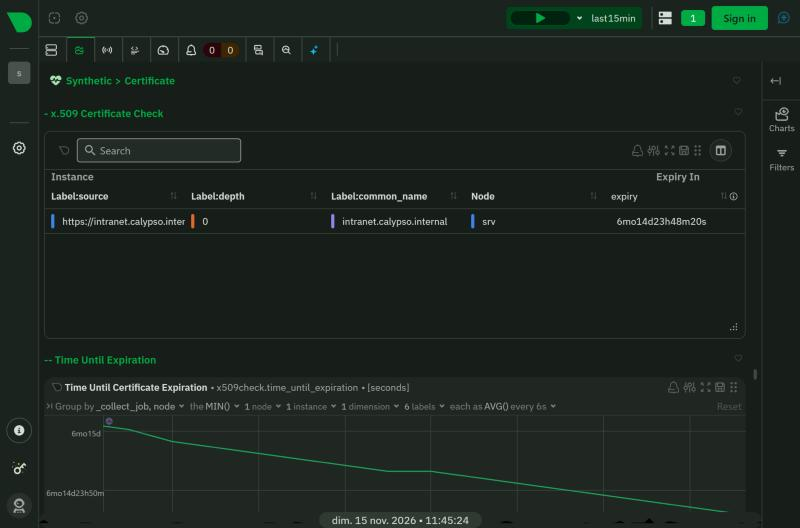
Capture A6 : avant la panne - aucune alerte active
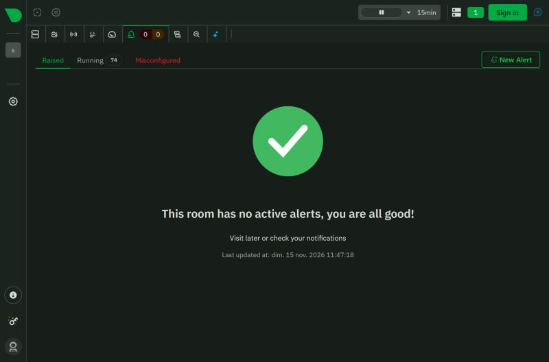
Capture A7 : pendant la panne - 1 alerte CRITICAL (ping de 10.10.30.1) et 2 WARNING
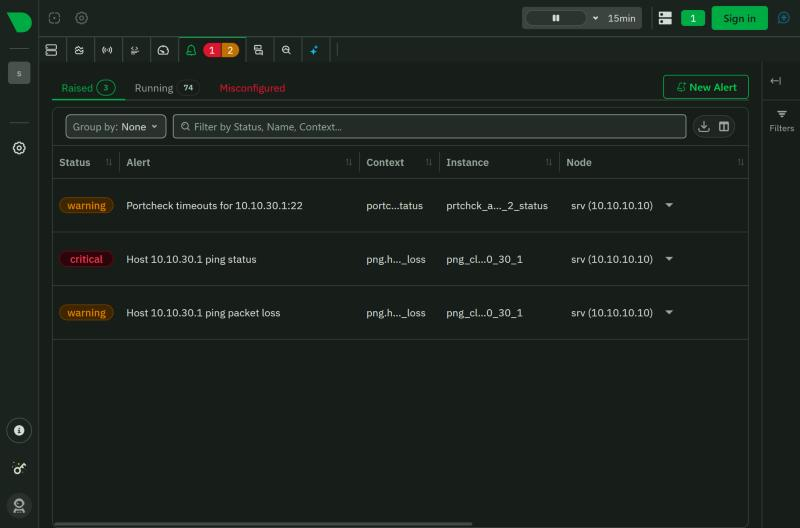
Capture A8 : pendant la panne - perte de paquets de 100 % vers 10.10.30.1 (agence)
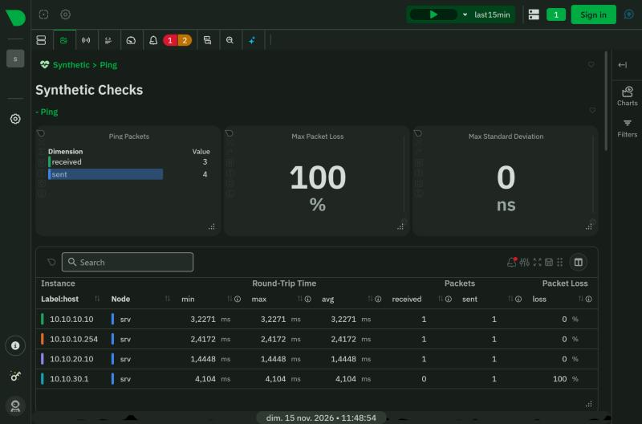
Capture A9 : après la panne - plus aucune alerte active
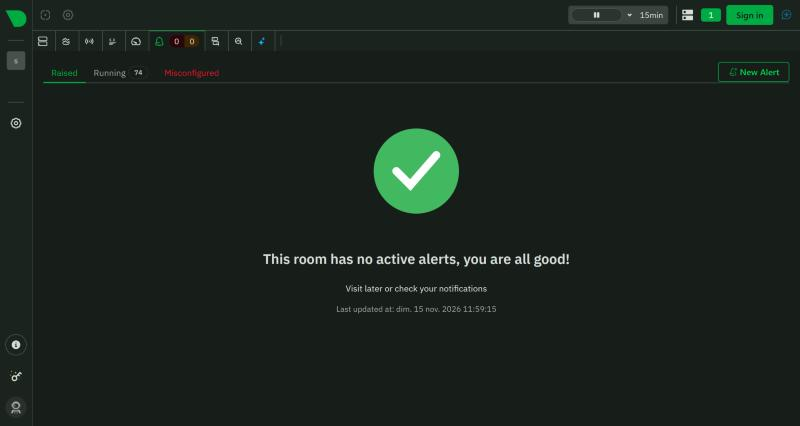
Capture A10 : commandes de la panne (sortie du terminal, 15/11/2026)
$ ssh agence "date; sudo systemctl stop wg-quick@wg0; date" dim. 15 nov. 2026 11:47:37 CET dim. 15 nov. 2026 11:47:38 CET $ ssh agence "date; sudo systemctl start wg-quick@wg0; date" dim. 15 nov. 2026 11:49:07 CET dim. 15 nov. 2026 11:49:08 CET
Sorties réelles des commandes lancées sur les VM, dans l'ordre des tests.
Capture B1 : Tunnel vu de gw : 2 pairs, handshakes récents (t01)
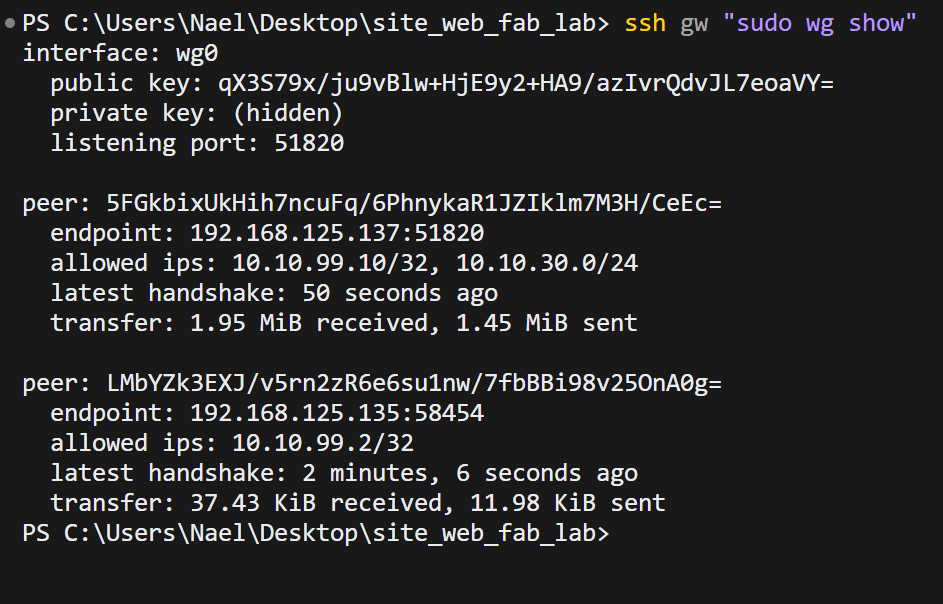
Capture B2 : Tunnel activé au démarrage sur agence : enabled (t02)
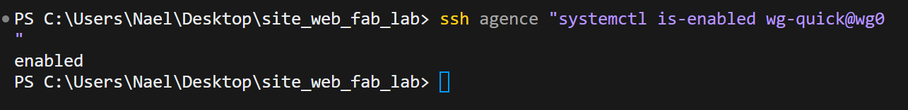
Capture B3 : Tunnel vu d'agence (t02)
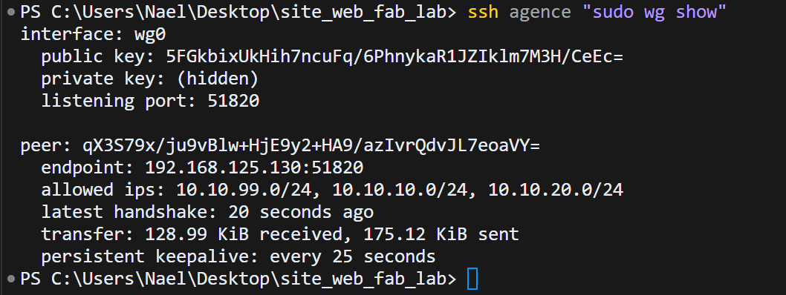
Capture B4 : Adresses d'agence : WAN 192.168.125.137, LAN 10.10.30.1/24, wg0 (E1)
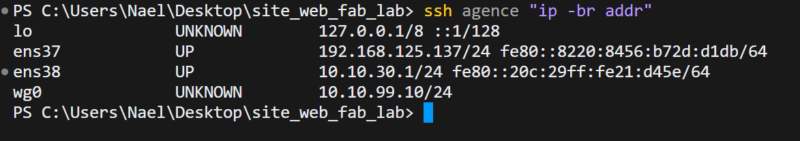
Capture B5 : SSH d'agence : root interdit, mot de passe interdit (E1)
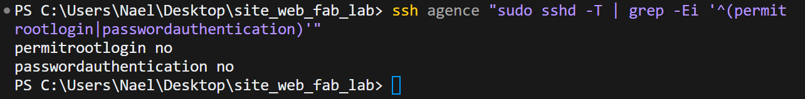
Capture B6 : Flux autorisé : agence vers srv, ping OK (F19)
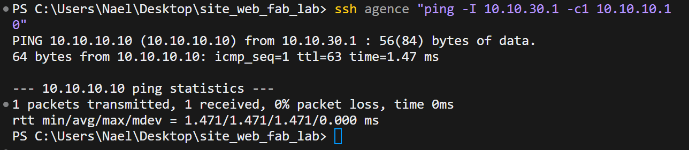
Capture B7 : Flux autorisé : DNS de srv depuis agence, web.calypso.internal 10.10.20.10 (F16)
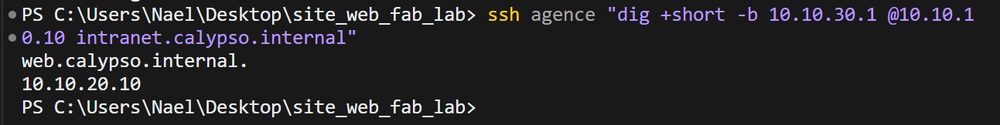
Capture B8 : Flux autorisé : intranet depuis agence, code 200 (F18)
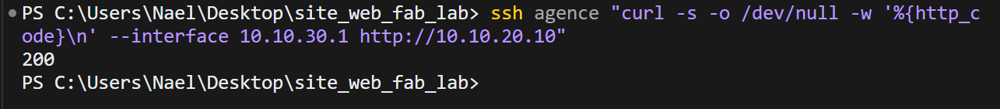
Capture B9 : Flux refusé : agence vers SSH de srv, timed out (F10)
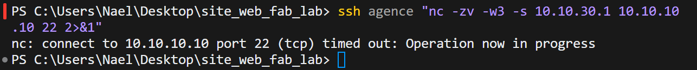
Capture B10 : Flux refusé : agence vers le SSH de srv (10.10.30.1 vers 10.10.10.10 port 22). Ligne du journal de gw : IN=wg0 (tunnel), OUT=ens37 (LAN), DPT=22 (F10)
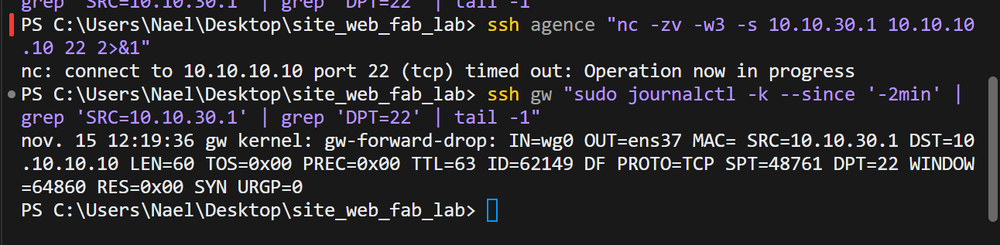
Capture B11 : Siège vers agence : ping et SSH par clé (F15)
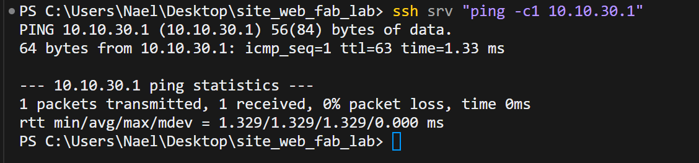
Capture B12 : Siège vers agence : connexion SSH par clé, réponse agence (F15)
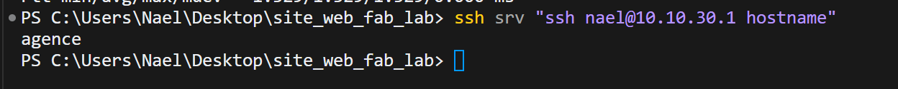
Capture B13 : Ports de gw vus depuis agence : 22, 80, 443 ouverts ; 53, 3128, 19999 filtrés (E4)
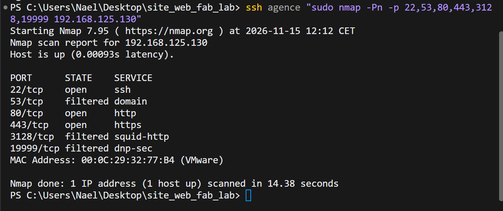
Capture B14 : Règles numérotées F11 à F19 dans nftables.conf (E5)
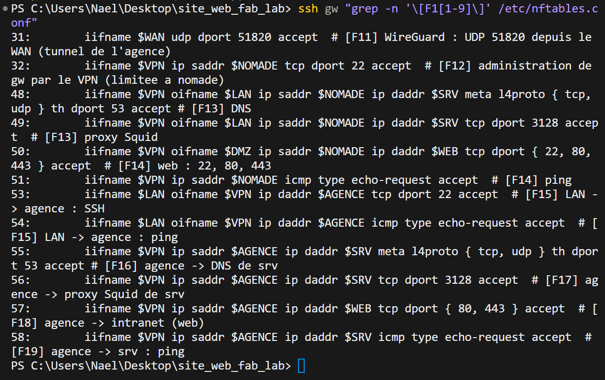
Capture B15 : Netdata n'écoute que sur 127.0.0.1 (E6)
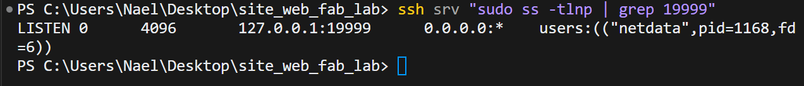
Capture B16 : Redémarrage d'agence : tunnel relevé seul (E2)
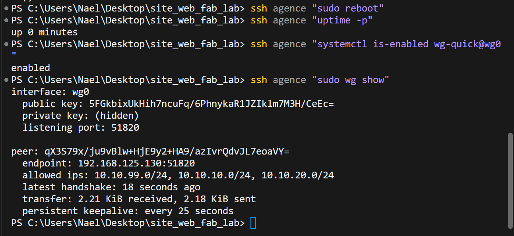
Capture B17 : Redémarrage de gw : tunnel et pare-feu revenus seuls (E2, E5)
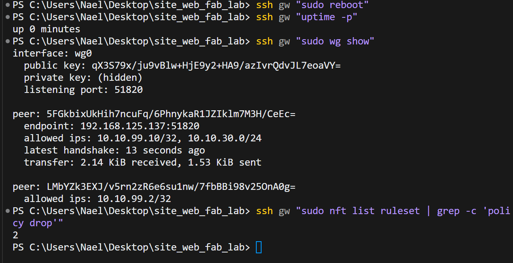